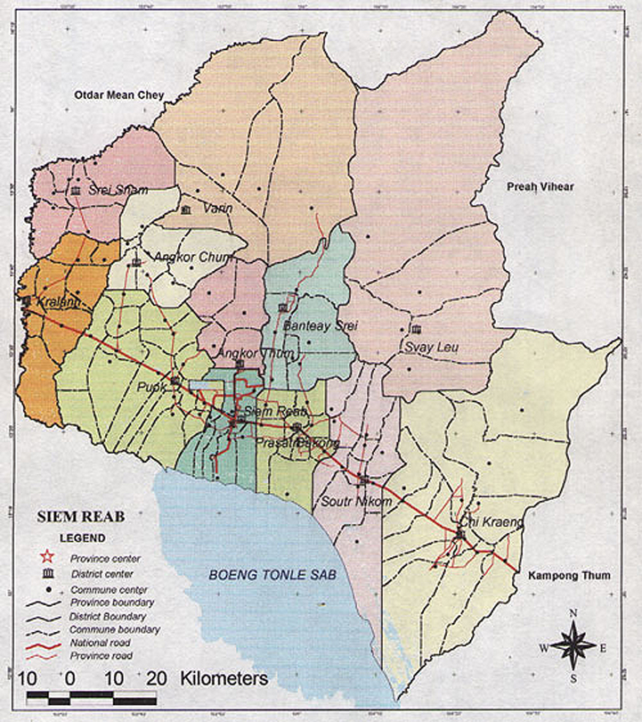

ខេត្តសៀមរាប
ឈ្មោះនៃខេត្តសៀមរាប
ខេត្តសៀមរាប គឺជាអតីតខេត្តមួយឈ្មោះថាខេត្តមហានគរ។ការប្ដូរឈ្មោះមកជាខេត្តសៀមរាបនេះគឺនៅក្នុងរជ្ជកាលព្រះបាទចន្ទរាជា។បើតាមព្រះរាជពង្សាវតារខ្មែរមូលហេតុបានជាផ្លាស់ប្ដូរឈ្មោះខេត្តនេះបានបញ្ជាក់ថានៅក្នុងឆ្នាំ ១៥៣០ នៃគ្រិស្តសករាជស្ដេចនៃនគរស្រីអយុធ្យាបានបញ្ជាឲ្យកងទ័ពខ្លួនវាយលុកប្រទេសកម្ពុជានៅក្នុងខេត្តមហានគរដើម្បីបង្ក្រាបការមិនចុះញ៉មរបស់ព្រះបាទចន្ទរាជា។កងទ័ពសៀមដណ្ដើមខេត្តមហានគរបានមួយរយៈហើយមេដឹកនាំរបស់ខ្លួនបានទៅទស្សនាប្រាសាទយ៉ាងគួរឲ្យស្ងប់ស្ងែង។បន្ទាប់មកទ័ពស្ដេចសៀមនេះបានជួបនឹងទ័ពស្ដេចខ្មែរនៅតំបន់អង្គរហើយបានប្រយុទ្ធគ្នាធ្វើឲ្យកងទ័ពសៀមទទួលបរាជ័យយ៉ាងធ្ងន់ធ្ងរ។ក្រោយពីទទួលបានជ័យជំនះមកព្រះបាទចន្ទរាជាបានបរិញ្ញាតិ្តឲ្យប្ដូរឈ្មោះខេត្តមហានគរនេះទៅជាខេត្តសៀមរាបវិញដែលមានន័យថាទ័ពសៀមត្រូវបង្ក្រាបឲ្យរាបនៅទីនេះ។
អ្នកប្រវត្តិសាស្ត្រនៃប្រទេសកម្ពុជាបានពន្យល់ប្រហាក់ប្រហែលគ្នាថាពាក្យសៀមគឺទាក់ទងនឹងជាតិសាសន៍មួយដែលបច្ចុប្បន្នបានប្រែឈ្មោះទៅជាថៃទៅហើយ។រីឯពាក្យថារាបគឺមានន័យថា ចាញ់ខ្លបខ្លាច។

ផែនទី ខេត្តសៀមរាប
ប្រវត្តិសាស្ត្រ
សម័យមុនអង្គរ
អ្នកស្រាវជ្រាវខាងប្រវត្តិវិទ្យានិងបុរាណវិទ្យាជាច្រើនបានអះអាងថាប្រវត្តិសាស្រ្តនៃតំបន់សៀមរាបអង្គរបានចាប់ផ្តើមឡើងនៅក្នុងឆ្នាំ ៨០២ នៃគ្រិស្តសករាជនៅក្នុងរជ្ជកាលព្រះបាទជ័យវម្ម៌ទី ២ ក្រោយពីព្រះមហាក្សត្រអង្គនេះបានយាងមកពីប្រទេសជ្វានៅក្នុងឆ្នាំ ៨០០ នៃគ្រិស្តសករាជ។តាមឯកសារខាងលើបានឲ្យដឹងថាព្រះបាទជ័យវម៌្មទី ២ កាលនៅក្នុងដំណាក់កាលទី ០២ ទ្រង់គង់នៅទីក្រុងឥន្រ្ទបុរៈនៅខេត្តកំពង់ចាមបន្ទាប់មកទ្រង់គង់នៅលើភ្នំគូលែន(មហេន្ទ្របវ៌តឬមហិន្រ្ទបព៌ត)។និងចុងក្រោយបំផុតទ្រង់គង់នៅទីក្រុងហរិហរាល័យ(តំបន់រលួស)ដែលជារាជធានីដើមនាសម័យអង្គរ។លោកបណ្ឌិតមីសែល ត្រាណេបានមានប្រសាសន៍ឲ្យដឹងថាវប្បធម៌អង្គរបានផ្តើមឡើងនៅក្នុងឆ្នាំ ៨០២ នៃគ្រិស្តសករាជគឺនៅពេលដែលព្រះបាទជ័យវម៌្មទី ២ បានអភិសេកជាព្រះមហាក្សត្រនៅលើភ្នំគូលែន(មហេន្ទ្របវ៌តឬមហិន្រ្ទបព៌ត)។។ការអភិសេករបស់ព្រះអង្គគឺឈរនៅលើមូលដ្ឋាននៃពិធីទេវរាជដែលបានផ្តល់ចំពោះព្រះអង្គនូវមហិទ្ធិប្ញទ្ធិដើម្បីធ្វើការបង្រួបបង្រួមជាតិហើយជាឆ្នាំដែលព្រះបាទជ័យវម៌្មទី ២ ប្រារព្ធពិធីទេវរាជនៅលើភ្នំគូលែន(មហេន្ទ្របវ៌តឬមហិន្រ្ទបព៌ត)។។ព្រះអង្គបានបើកសករាជថ្មីមួយដែលធ្វើឲ្យអរិយធម៌វប្បធម៌ខ្មែររីកចម្រើនរុងរឿងនាសម័យមហានគរ។ការអះអាងបែបនេះក៏បានបង្អាញឲ្យដឹងទៀតថាវប្បធម៌សម័យបុរេអង្គរ(មុនអង្គរ)គឺយោងតាមឯកសារមួយចំនួនដែលផែ្អកតាមកំណត់ហេតុរបស់ចិន។ឯកសាររបស់គេបានសម្អាងលើកំណត់ត្រាផងនិងស្ថាបត្យកម្មប្រាង្គប្រាសាទមួយចំនួនផង។រីឯព្រឹត្តិការណ៍ដែលគួរឲ្យកត់សម្គាល់ជាខ្លាំងមួយទៀតគឺនៅក្នុងអំឡុងសម័យចេនឡានៅលើទឹកដីបវរនៃខេត្តសៀមរាបអង្គរ។កំណត់ហេតុចិនបានឲ្យដឹងថាទីក្រុងដំបូងបំផុតនៅខេត្តសៀមរាបមានឈ្មោះថានគរគម្ពីរដែលសិ្ថតនៅរវាងបារាយណ៍ខាងលិចនិងបារាយណ៍ខាងកើតនៃតំបន់សៀមរាបអង្គរ។សេ្តចខែ្មរដែលសោយរាជ្យសម្បត្តិនៅនគរគម្ពីរនេះគឺព្រះបាទចន្ទ្រវម្ម៌។លោកបណ្ឌិតមីសែល ត្រាណេបានមានប្រសាសន៍ឲ្យដឹងបនែ្ថមទៀតថាកាលពីសម័យបុរេអង្គរនាអំឡុងឆ្នាំ ៨០២ នេះសេដ្ឋកិច្ចនិងបរិយាកាសង្គមរបស់តំបន់សៀមរាបអង្គរមានការវិវត្តជាវិជ្ជមាន។គេបានឃើញមានការរៀបចំដែនដីឬនគរូបនីយកម្មដែនដីនៅក្នុងតំបន់នីមួយៗនៃខេត្តនេះយ៉ាងច្បាស់លាស់ទៅហើយចាប់តាំងពីចុងសតវត្សរ៍ទី ០៦ នៃដើមសតវត្សរ៍ទី ០៧ នៃគ្រិស្តសករាជ។ជនជាតិខែ្មរក្រោមការដឹកនាំរបស់ព្រះមហាក្សត្រនិងពួកព្រាហ្មបុរោហិតបានចាប់ផ្តើមគម្រោងការកសាងប្រាសាទឥដ្ឋដំបូងបង្អស់ជាច្រើន។រីឯវិស័យសង្គមកិច្ចវិញគេបានដឹងថាបុព្វការីជនខែ្មរចូលចិត្តកសាងទីលំនៅរបស់ខ្លួននៅកែ្បរបឹងទនេ្លសាបកែ្បរអូរស្ទឹងធម្មជាតិជាដើម។ការកសាងប្រាសាទក៏ដូច្នោះដែរគឺបុព្វការីជនខែ្មរតែងតែជ្រើសរើសរកទីតាំងណាខ្ពស់មិនលិចទឹកនៅរដូវវស្សាគំនិតរបស់ខែ្មរនៅក្នុងការជ្រើសរើសទីតាំងខ្ពស់សម្រាប់ការកសាងសំណង់ផេ្សងៗគឺជាប្រយោជន៍រួមគឺនៅតែបន្តរហូតមកទល់សព្វថៃ្ងនេះ។
សម័យអង្គរ
ខ្មែរបានជ្រើសរើសទីតាំងតំបន់អង្គរធ្វើជារាជធានីព្រោះស្ថិតនៅចំចំណុចកណ្ដាលនៃអាណាចក្រខ្មែរនិងជាទីប្រជុំនៃជំនួញទាំង ០២ គឺជើងគោកនិងជើងទឹកហើយសម្បូរទៅដោយធនធានធម្មជាតិសព្វគ្រប់ដូចជាត្រីនៅក្នុងបឹងទន្លេសាប ព្រៃឈើ ថ្មភក់ ថ្មបាយក្រៀម ឥដ្ឋសម្រាប់កសាងប្រាសាទនិងដីដែលមានជីវជាតិផងដែរ។ខេត្តសៀមរាបនៅក្នុងសតវត្សរ៍ទី ០៩ ដល់សតវត្សរ៍ទី ១៥ បានបម្រើការជារាជធានីនិងជាមជ្ឈមណ្ឌលដ៏សំខាន់នៃអំណាចនយោបាយ វប្បធម៌ និង សាសនារបស់អាណាចក្រខ្មែរ។ភាពថ្កើងថ្កានរបស់ទីក្រុងគឺជារាជធានីនៃអាណាចក្រខ្មែរដែលគ្រប់គ្រងដោយស្តេចដែលមានអំណាចជាបន្តបន្ទាប់។ខេត្តសៀមរាបមានទីតាំងយុទ្ធសាស្ត្រនៅចំចំណុចកណ្ដាលនៃអាណាចក្រហើយមានភាពងាយស្រួលនៅក្នុងការគ្រប់គ្រងត្រួតត្រានិងគ្រប់គ្រងទឹកដីដ៏ធំធេងមួយនេះ។ទីក្រុងនេះបានរីកចម្រើនក្លាយជាទីក្រុងដែលមានភាពអ៊ូអរបម្រើជាមជ្ឈមណ្ឌលរដ្ឋបាល សេដ្ឋកិច្ច និង សាសនានៅក្នុងតំបន់។នៅសម័យអង្គរដែលជាយុគមាសរបស់ខ្មែរៗបានអនុវត្តនយោបាយវាតទីទឹកដីពង្រឹងអរិយធម៌ឲ្យរីកចម្រើនរុងរឿងនិងកសាងសំណង់ប្រាសាទល្បីល្បាញមួយចំនួនទាំងធំទាំងតូចដែលបង្ហាញអំពីតម្លៃវប្បធម៌អរិយធម៌ខ្មែរពាសពេញអាណាចក្រខ្មែរ។តំបន់សៀមរាបត្រូវបានបម្រើការជារាជធានីអស់រយៈពេល ០៦ សតវត្សរ៍មកហើយ។នៅតំបន់សៀមរាបមានការអភិវឌ្ឍរីកចម្រើនលូតលាស់គ្រប់វិស័យនិងមានភាពសម្បូរសប្បាយប្រជាជនខ្មែររស់នៅតំបន់សៀមរាបអង្គរភាគច្រើនប្រកបមុខរបរកសិកម្មនិងនេសាទជាធំ។តំបន់ជុំវិញបឹងទន្លេសាបជាដីដ៏សម្បូរជីវជាតិ។គេអាចធ្វើស្រែនៅតំបន់នេះប្រហែលជាពីរទៅបីដងនៅក្នុងមួយឆ្នាំដូច្នេះហើយបានជាយើងឃើញមានប្រព័ន្ធធារាសាស្ត្រមួយចំនួនដែលបន្សល់ទុកតាំងពីសម័យអង្គរមកម្ល៉េះ។